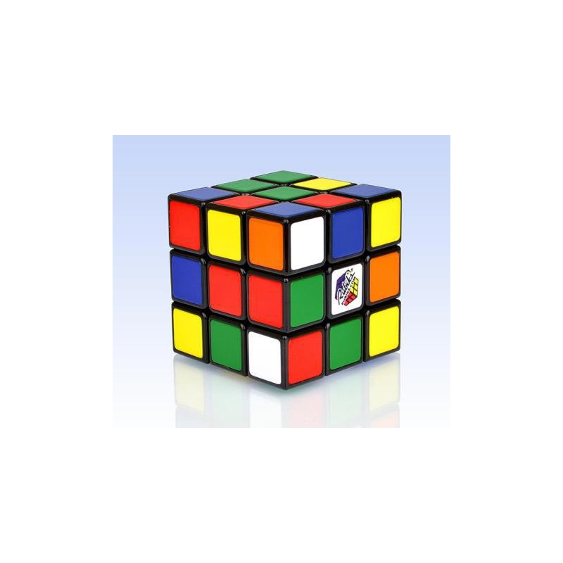

Welcome to Rubiko-kubas
Rubiko kubas | kl.lt
2020.10.29 03:53 Pereiti į pagrindinį turinį DIENRAŠTIS Dienraštis Skelbimai dienraštyje Prenumerata E-LEIDINIAI 370 DURYS Klaipėda RU Sveikata PORTALAI DIENA.lt KaunoDiena.lt Jūra Skelbimai Konkursai Galerijos Žaidimai Įmonių katalogas KETVIRTADIENIS 2020 10 29 ▾ Vardadienius švenčia: Ermelinda, Gelgaudas, Narcizas, Tolvydė, Violeta 10° 3 Orų prognozė ▾ smulkūs debesys Vilnius 10° 3 Kaunas 9° dulksna Daugiau... Pranešk naujieną Skelbimai Horoskopai Prisijungti Miestas Lietuva Verslas Pasaulis Sportas Kriminalai Sveikata Graži diena Laisvalaikis ir kultūra Įvairenybės Nuomonės Miestas Lietuva Verslas Pasaulis Sportas Kriminalai Sveikata Graži diena Laisvalaikis ir kultūra Įvairenybės Nuomonės KL.lt Rubiko kubas
Rubiko kubas
2018-08-18 18:09:00Rekordas: per 104 sekundes po vandeniu surinko šešis Rubiko kubus
Gruzijoje 18-metis Vako Marčilašvilis šeštadienį pasiekė Rubiko kubų sutvarkymo po vandeniu pasaulio rekordą. Skaityti daugiau 2017-03-09 11:20:00Robotas Rubiko kubą išsprendė per vos daugiau nei pusę sekundės
Gineso rekordų knygoje atsiras dar vienas neįtikėtinas pasiekimas – Vokietijoje sukurtas robotas Rubiko kubą išsprendė per mažiau nei sekundę. Taip, pastarieji keli metai robotams bei dirbtiniam intelektui yra neįtikėtinai sėkmingi, bet net šiame kontekste šis pasiekimas atrodo neįtikėtinai. Galvosūkis buvo išspręstas per 0,637 s, tam prireikė 21 ėjimo, o viskam pamatyti reikia sulėtinto pakartojimo. Skaityti daugiau 2016-11-10 15:57:00Rubiko kubo gamintojai neteko Europos prekių ženklo
Rubiko kubo, spalvotos dėlionės, kuri užvaldė milijonus žmonių visame pasaulyje, gamintojai ketvirtadienį pralaimėjo kovą Europos Teisingumo Teisme (ETT), siekdami išsaugoti šio išskirtinės formos žaislo prekių ženklą. Skaityti daugiau 2014-03-18 10:55:00Naujas pasaulio rekordas: Rubiko kubas įveiktas vos per 3,2 sekundes!
„Cubestormer III“ robotas, naudodamas ARM procesorių sumušė Rubiko kubo pasaulio Gineso rekordą, sudėliodamas jį per 3,253 sekundes. Didžiojo sprogimo (angl. „Big Bang“) mugėje Birminghamo mieste išradėjas David Gilday ir Mike Dobson pademonstravo savo 18 mėnesių trukusio projekto rezultatą – greičiausias kada nors roboto surinktas Rubiko kubas. Naujasis laimėjimas pranoksta buvusį geriausią 5,27 sekundžių laiką, pasiektą prieš dvejus metus. David Gilday yra principingas ARM (procesorių dizaino įmonės įsikūrusios Kembridže) inžinierius ir Securi-Plex apsa Skaityti daugiau 2013-07-30 13:55:00Pasaulio Rubiko kubo čempionas galvosūkį įveikė vos per 7,36 sek.
2013 metų Pasaulio Rubiko kubo čempionatą nugalėjo australas Feliksas Zemdegsas, kubą surinkęs per 7,36 sek., skelbia telegraph.co.uk. Septyniolikmetis buvo pripažintas geriausiu po Las Vegase tris dienas trukusios kovos. Čia į Pasaulio Rubiko kubo čempionatą susirinko 500 varžovų iš 37 šalių. Feliksas Zemdegsas čempiono titulą pelnę už mažiausią 3x3 Rubiko kubo surinkimo laiko vidurkį – 8,18 sek. ir geriausią pademonstruotą rezultatą – 7,36 sek. Vaikinas taip pat nugalėjo ir 4x4 Rubiko kubo bei 3x3 viena ranka renkamo kubo rungtyse. Skaityti daugiau 2011-06-30 16:00:02Matematikai apskaičiavo maksimalų judesių skaičių Rubiko kubui išspręsti
Rubiko kubas – sudėtinga užduotis ne tik tiems, kurie tikisi jį sudėlioti, bet ir matematikams. Mokslininkai apskaičiavo, kad maksimalus skaičius pasukimų sudėti Rubiko kubui yra 43 kvintilijonai (1018) judesių. Rubiko kubo „ekspertai“ sudėlioti šį kubą gali su mažiau nei 20 judesių. Apskaičiuoti šį skaičių su paprastų namų kompiuteriu būtų užtrukę 35 metus. Matematikai, prieš pradedami skaičiavimus, turėjo visų pirma išsiaiškinti visas galimas startines pozicija kube. Skaičiavimams buvo panaudotas kubas su devyniais langeliais kiekvienoje sienelėje. Jei Skaityti daugiau 2011-06-23 22:23:17Pagerinta dešimt Lietuvos Rubiko kubo rekordų
Savaitgalyje vykusiame Rubiko kubo varžybose Taline pirmą kartą buvo atstovaujama ir Lietuva. Tarp dalyvių buvo du tautiečiai - kaunietis Lukas Vaitkevičius ir šiaulietis Mantas Sidabras. L.Vaitkevičius į Lietuvą grįžo užėmęs tris przines vietas - pyraminx, 4x4 ir 5x5 rungtyse. Taip pat lietuvis pagerino net dešimt Lietuvos Rubiko kubo rekordų. Skaityti daugiau 2011-06-03 15:19:10Robotas pasiekė naują Rubiko kubo surinkimo pasaulio rekordą (video)
Šeši Svinburno technologijų universiteto (Australija) baigiamojo kurso studentai kaip bakalauro studijų baigiamąjį darbą sukonstravo robotą Rubį, kuris stipriai pagerino Rubiko kubo surinkimo pasaulio rekordą tarp robotų. Tiesa, iki žmogaus rekordo Rubiui dar trūksta. Įdėmiai nužvelgti kubo formos galvosūkį ir sudėti jį teisingai Rubiui prireikė vos 10,69 sekundės. Ankstesnis robotų pasaulio rekordas – 18,2 sekundės – priklausė robotui Kubinatoriui („Cubinator“). Greičiausiai Rubiko kubo galvosūkį pasaulyje įveikęs žmogus yra Feliksas Zemdegas (Feliks Zem Skaityti daugiau 2011-07-14 18:02:21Tikrasis kubizmas: meno kūriniai iš Rubiko kubų
Menininkas Joshas Chalomas sugalvojo neįprastą būdą, kaip įamžinti pasaulio įžymybes. Jis portretus „tapo“ Rubiko kubų pagalba. Menininko kolekcijoje jau yra Madonnos, Michaelio Jacksono, Marilyn Monroe paveikslai. Dėl kubų formos paveikslai „iššoka“ iš sienos, suteikdami meno kūriniams trimatį vaizdą. Tarp menininko darbų yra ir „Mona Liza“, muzikantai ir politikai. „Myliu tokią meno formą“, - teigė menininkas, dirbantis kartu su dar 30 žmonių. Vyras su Rubiko kubais dirba jau trejus metus. Kol kas didžiausias paveikslas „nutapytas“ iš 12,090 Rubik Skaityti daugiau 2012-09-27 22:31:12Kauno moksleivis Rubiko kubo varžybose susišlavė šešis apdovanojimus
Lietuvos rekordus nuolat gerinantis Kauno Senamiesčio progimnazijos moksleivis Lukas Vaitkevičius iš Rygoje vykusių Rubiko kubo varžybų parsivežė net šešis apdovanojimus. Tarp 30 dalyvių L. Vaitkevičius geriausiai pasirodė komandinėse varžybose. Šioje rungtyje jis dalyvavo kartu su šiauliečiu Mantu Sidabru. Rungtis kol kas nėra įtraukta į oficialų Pasaulio Rubiko kubo sporto asociacijos rungčių sąrašą, tačiau labai įdomi. Vienas komandos narys užrištomis akimis dėlioja kubą, o kitas stebėdamas procesą sako, kokius veiksmus atlikti. Lukui ir Mantui prireikė v Skaityti daugiau Puslapis 0 ›› Durys Kryžiažodis Skelbimai Jūra Portalo svečias Orai Santaka 370 Klaipėda RU Dienraštis E leidiniai Prenumerata PR Kontaktai Karjera Reklama dienraštyje Asmens duomenų tvarkymo politika Parsekas Slapukų naudojimasVisos teisės saugomos © 1998 - 2020 UAB „Diena Media News“
Apklausa
Kaip reaguojate į paskelbtus lokalius karantinus?
Savaitės apklausa: 0Dienos kadras
Ruduo 0 Vytauto Liaudanskio nuotr. Įkelk kadrą Archyvas Dienraštis Klaipėda